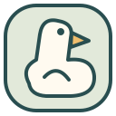
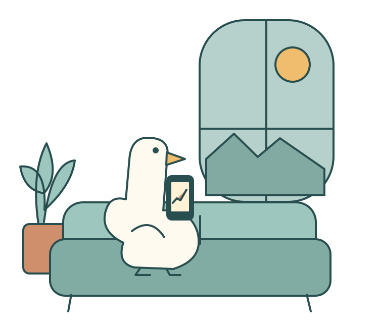
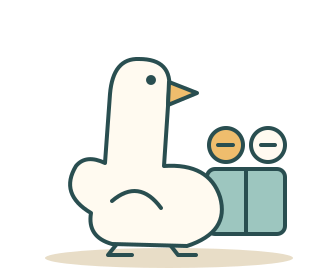
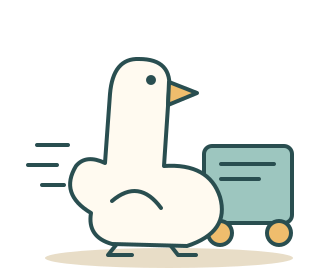
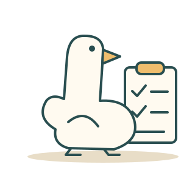
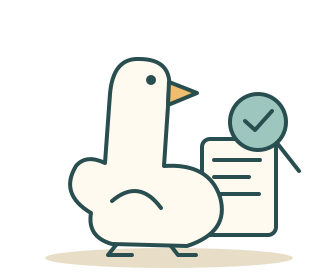
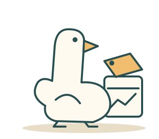
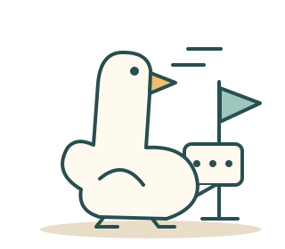
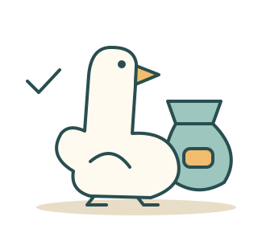

阿白 / 纸色 / 墨线 / 青绿与金色

面对涨跌、诱惑和原来的计划你会怎么选？

卖早了又涨，亏了舍不得走朋友赚得比自己多……没有标准答案，也不用选最理性的凭第一反应，选你真会做的
阿白侧脸作识别符号，收进青绿圆角方形封面使用图形标识，文字由主标题承担
涨跌之间看看你是哪种鹅

别急，我还有另一半

别催，我已经在车上了

我先跟昨天的自己对一下账

先别报涨跌，告诉我为什么

道理我懂，先等它回到那个价

等等，我问个人

这局先到这，下一局再说
本页为视觉设计稿，按钮为排版示意；完整题库与计分尚未接入当前四题预览